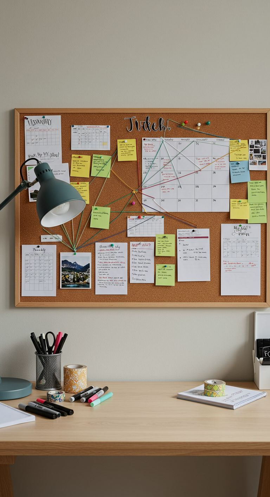

Доска для заметок
$ 12.99
В корзинуЭтот классическая доска для заметок из натуральной пробки станет незаменимым помощником для планирования и визуализации идей. Лаконичная деревянная рама и теплая текстура поверхности создают уютную рабочую атмосферу, позволяя удобно закрепить важные заметки, календарь или фотографии прямо перед глазами.
Характеристики
- Материал: натуральная мелкозернистая пробка
- Рама: светлое дерево (сосна)
- Ширина: 90 см
- Высота: 60 см
- Толщина: 1,5 см
- Крепление: горизонтальное и вертикальное